Tienda rumana y panadería en Lloret de Mar
Productos tradicionales rumanos, pan y dulces, y comida casera rumana para llevar.
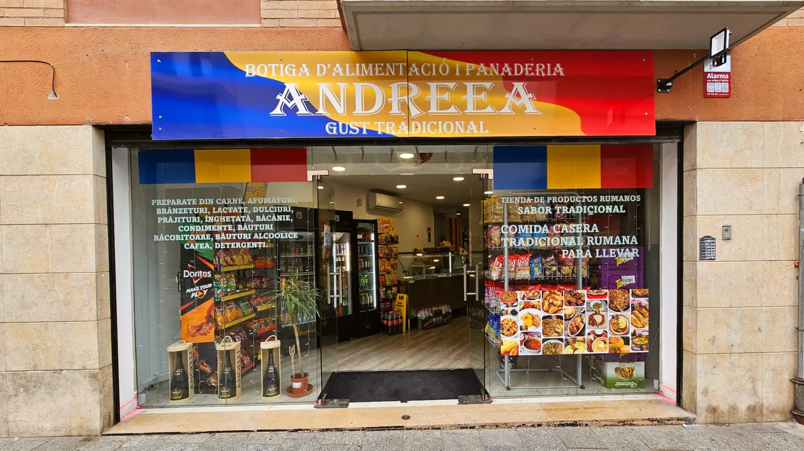
- Martes a sábado10:00 – 20:00
- Domingo10:00 – 17:00
- LunesCerrado
Noi v-am adus gustul de acasă.
Os hemos traído el sabor de casa.
Lo que encontrarás en la tienda
Como en su escaparate: en rumano a un lado y en tu idioma al otro. Toca cada fila para verla.
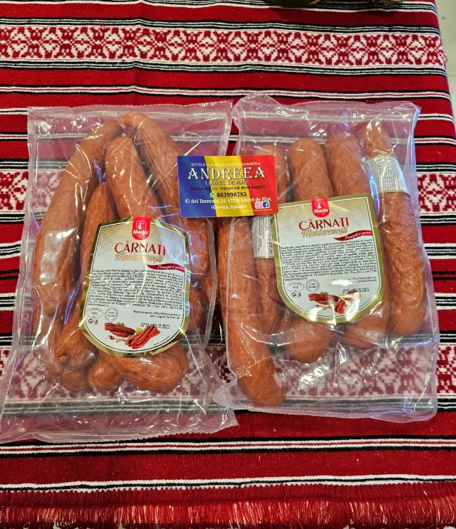
Y además: costilla, congelados, harinas, salsas, encurtidos, especias, helados, café, bebidas con y sin alcohol y droguería.
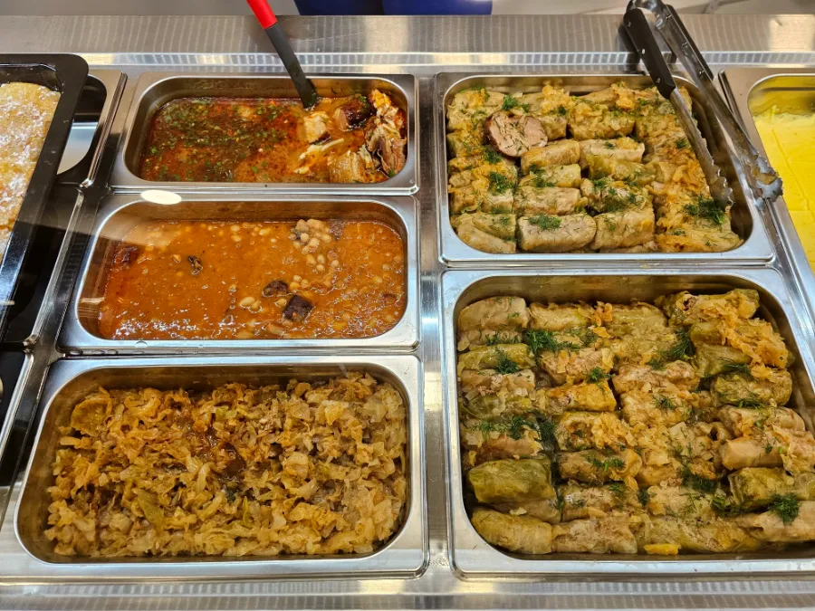
Comida casera rumana para llevar
Sarmale, ardei umpluți y otros platos rumanos hechos en casa, calientes y listos para llevar.
¿Quieres saber qué hay hoy en el mostrador? Pregúntanos antes de venir.
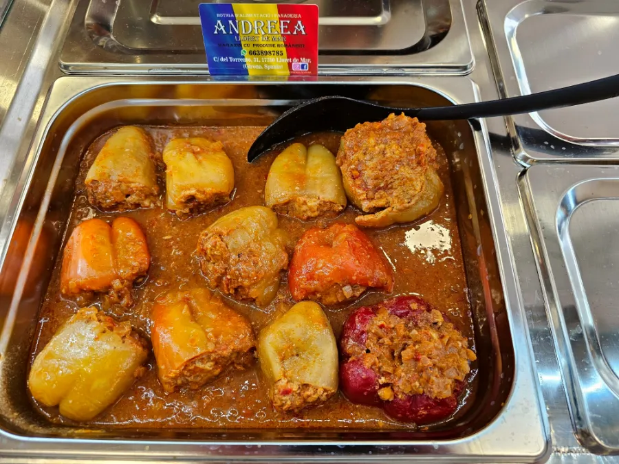
Los pasteles de la infancia
Prăjiturile copilăriei
- Amandine
- Savarine
- Eclere
- Diplomat
Los dulces de siempre de las pastelerías rumanas, y muchos más. Pregunta cuáles hay hoy.
Preguntar por los pastelesVerdura de temporada
Cuando es temporada llegan pimientos kapia y pimientos blancos para rellenar, tomates verdes para encurtir, rábano negro y leuștean, la hierba de las ciorbe.
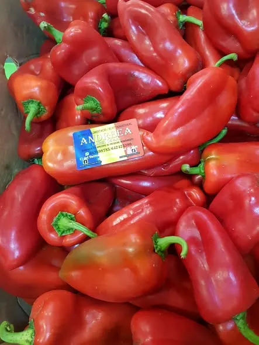
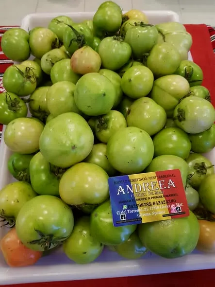
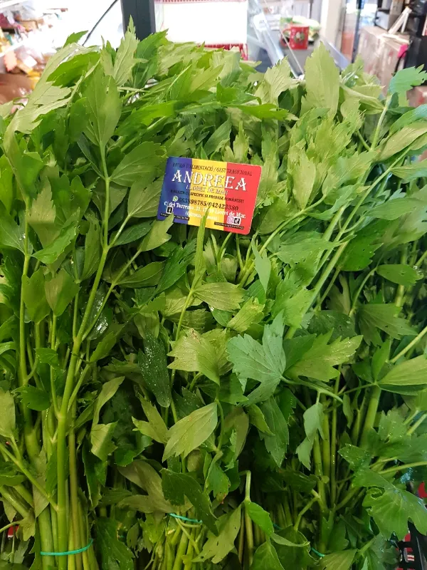
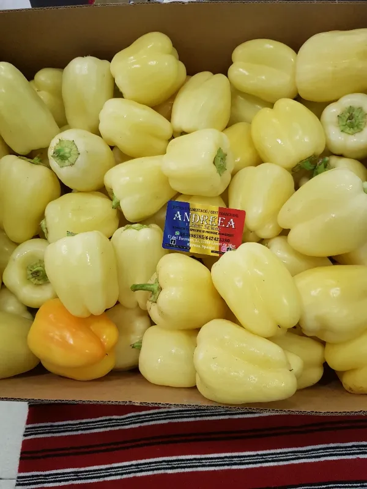
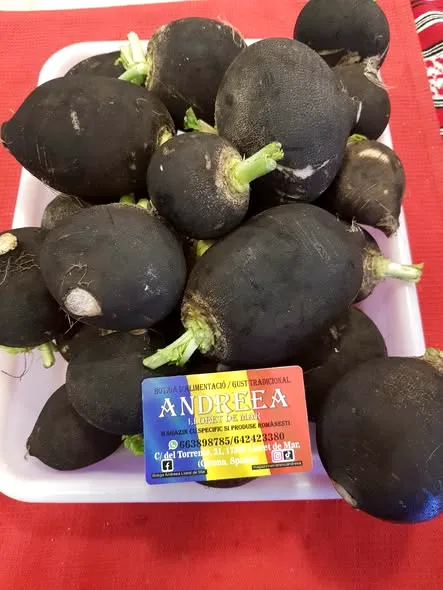
Rosas de satén para regalar
Arreglos de rosas de satén en caja o en cofre, en varios colores. Pregunta en la tienda cuáles tenemos.
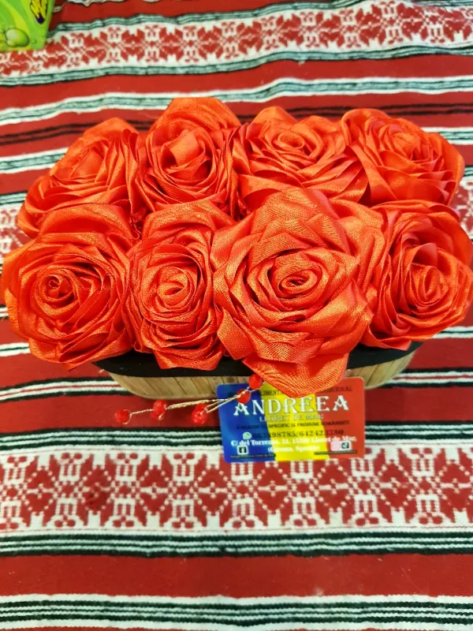
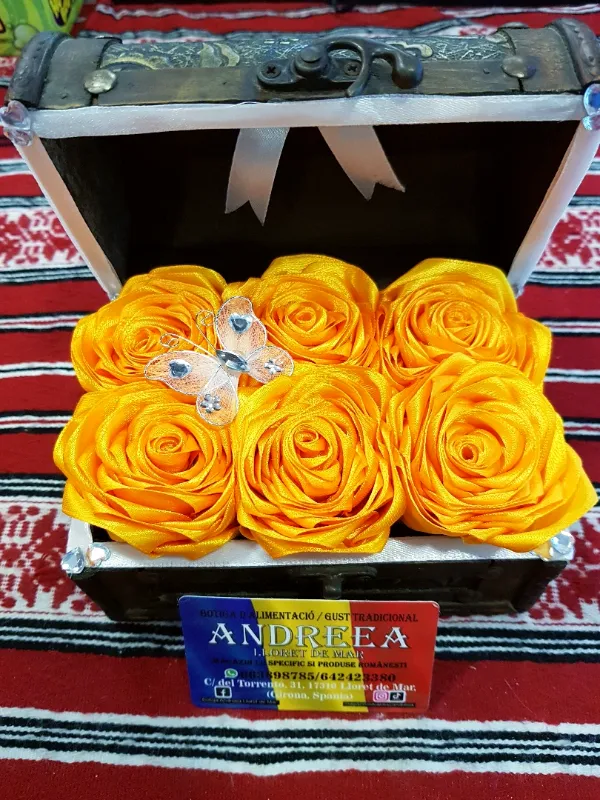
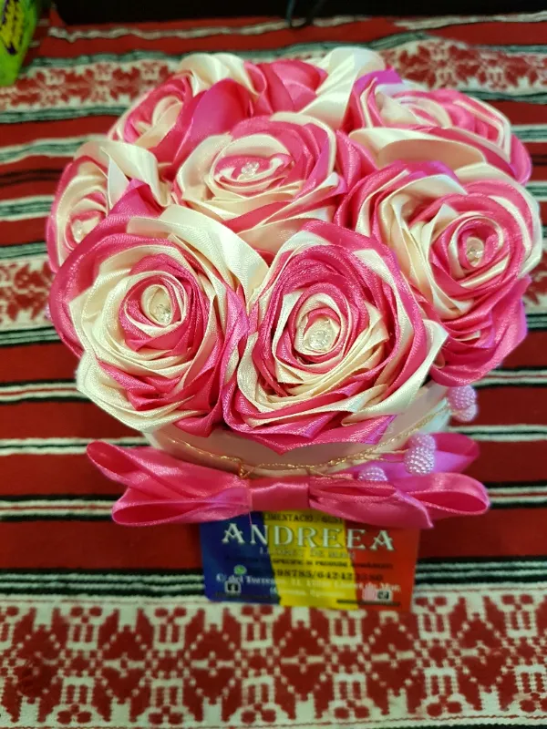
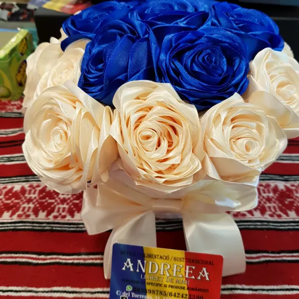
Lo que dicen los clientes
«La panadería es otro punto fuerte. Panes, dulces y preparaciones típicas que te transportan directamente a Rumanía. [...] El trato es cercano, amable y profesional.»
«Un rincón de Rumanía en Lloret de Mar. [...] Siempre encuentro todo lo que busco y descubro algo nuevo. Los precios son muy justos y el personal es amable y siempre dispuesto a ayudar.»
«Muy buena atención, la señora es muy simpática y tiene productos de gran calidad.»
Visítanos
Carrer del Torrentó, 3117310 Lloret de Mar
| Martes | 10:00 – 20:00 |
|---|---|
| Miércoles | 10:00 – 20:00 |
| Jueves | 10:00 – 20:00 |
| Viernes | 10:00 – 20:00 |
| Sábado | 10:00 – 20:00 |
| Domingo | 10:00 – 17:00 |
| Lunes | Cerrado |
En festivos el horario puede cambiar: lo avisamos en Instagram y Facebook.
- Teléfono
- 642 42 33 80
- 663 89 87 85
- Paquetes
- También somos punto de recogida de paquetes. Llámanos para saber qué días.